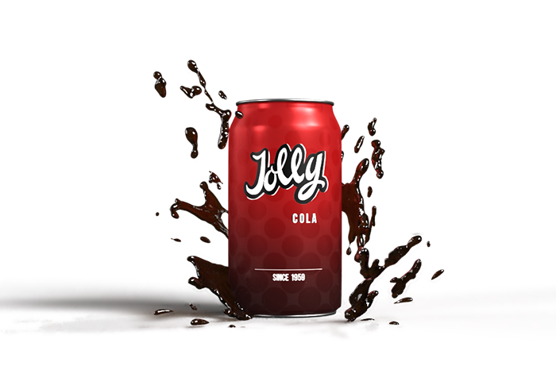

Jolly Cola

Klassikeren
God til tømmermænd, opblanding og hygge! Jolly Cola har været danskernes favorit siden 1959 og er nu det nostalgiske opdrejningspunkt for den gode stemning.
"Fås i 50 cl. og 150 cl. flasker samt i 33 cl. dåse."